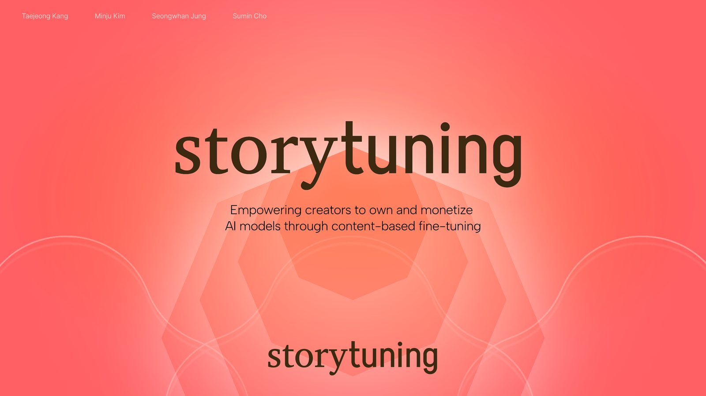

Project Overview
AI 이미지 모델은 수많은 창작물을 학습하지만, 어떤 데이터가 학습에 쓰였는지와 그 기여가 누구에게 보상되는지는 불투명합니다. StoryTuning은 창작자가 이미지를 IP로 등록하고, 그 이미지가 모델 fine-tuning과 생성 결과에 어떻게 기여했는지 기록해 보상 분배까지 연결하는 구조를 제안했습니다.
AI Dataset IP
Story Protocol
Fine-tuning
Royalty Distribution
